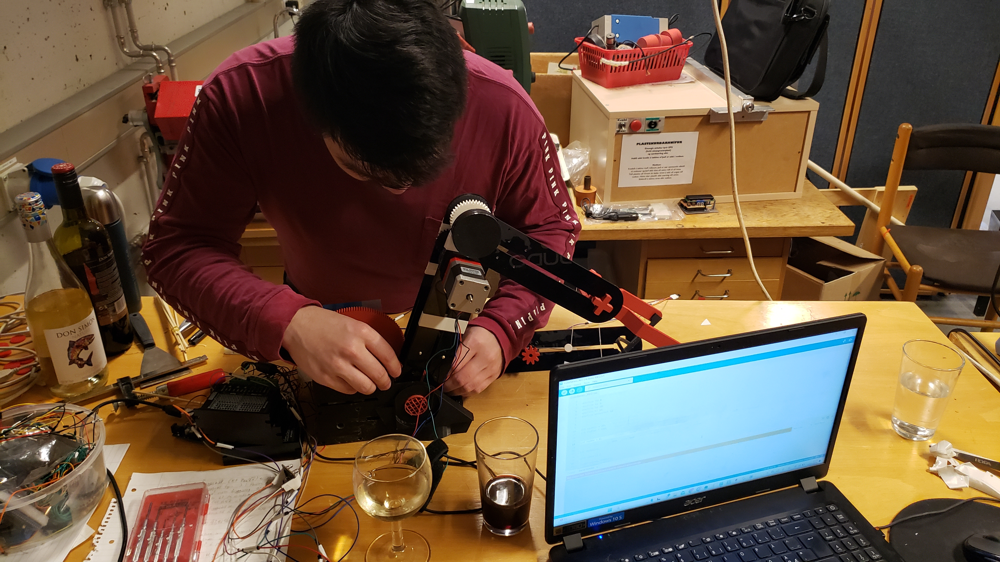

Project 2 - Wine robot
Work in progress (last updated 7. april)

Video that shows how the wine robot functions.
Video of the code output (should be played with video above at the same time)
Wine robot report
Video of the code output (should be played with video above at the same time)
Wine robot report
Pre calculations and component selection
First we need to calculate momentum and power before selecting motors. We calculated the necessary torque and gear ratios in excel (see on github page).
We assume 50% losses in the motors (because of poor design).
Helpful links:
Hardware required
- Arduino Uno
- big stepper motor MST001A-S8
- medium stepper motor SM42HT46-1684B
- small stepper motor SY35ST26-0248A
- Motor controller TB660
- Motor controller Velleman VMA409
- Motor controller TB6612
- Power suply
- Bread board
- hook-up wires
- very week stepper motor Step motor 28BYJ-48